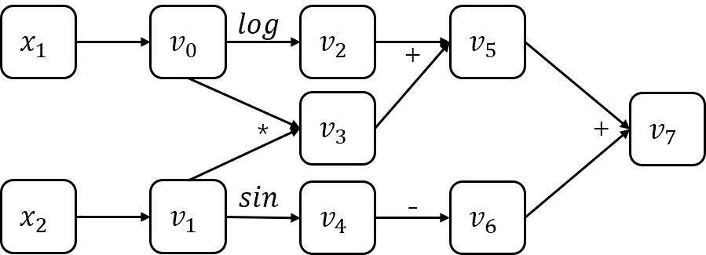
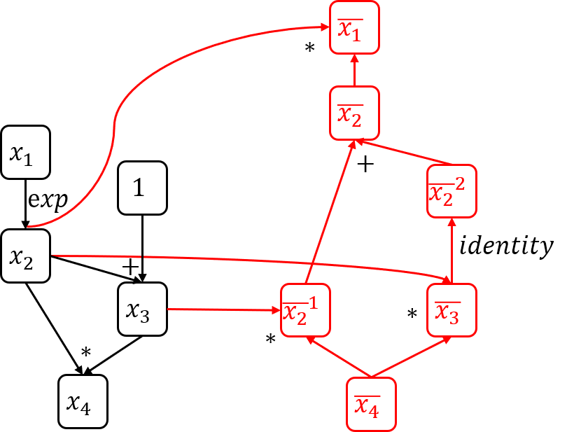

Automatic differentiation (AD), also called algorithmic differentiation or simply “autodiff” is one of the basic algorithms hidden behind the deep learning framework such as tensorflow, pytorch, mxnet, etc. It’s AD technique that allows us to focus on the design of the model structure without paying much attention to the gradient calculations during model training. However, this blog post will focus on the principle and implementation of AD. Finally, we will implement an AD framework based on computational graphs and use it for logistic regression. You could find all the code here.
Overview of AD
Methods for the computation of derivatives in computer programs can be classified into four categories[2]:
- Manually working out derivatives and coding them;
- Numerical differentiation using finite difference approximations;
- Symbolic differentiation using expression manipulation in computer algebra systems such as Mathematica, Maxima, and Maple;
- Automatic differentiation, also called algorithmic differentiation.
Here, I will give a simple example to illustrate the difference between the first three methods of derivation. As for automatic differentiation, the details will be described in later sections. Suppose we need to calculate the gradient of $x=1$ for the function $ f(x)=x(1-2x)^2 $. The calculation process of different methods is as follows:
- Method 1：
$$ f(x)=x-4x^2+4x^3 $$
$$ f’(x)=1-8x+12x^2 $$
$$ f’(1)=5 $$ - Method 2 ($ h $ can be any other minimum value):
$$ f’(x) \approx \frac{f(x-h)+f(x+h)}{2h}=\frac{f(1-0.00001)+f(1+0.00001)}{2*0.00001}=5.000003999999669 $$ - Method 3:
$$ f’(x)=(1-2x)^2 -4x(1-2x) $$
$$ f’(1)=5 $$
From this simple example we can see the shortcomings of the first three methods. Manual differentiation is time consuming and prone to error. Numerical differentiation is simple to implement but can be highly inaccurate and calculation consuming. Symbolic differentiation addresses the weaknesses of both the manual and numerical methods, but often results in complex and cryptic expressions plagued with the problem of “expression swell”.
Although AD provide numerical values of derivatives and and it does so by using symbolic rules of differentiation, AD is either a type of numerical or symbolic differentiation. In order to implement the AD, we usually need to build a computation graph. Below is the computation graph of the example $ f(x_1, x_2)=log(x_1) + x_1x_2-sin(x_2) $.

Based on computation graph, there are two methods to implement AD: forward mode and reverse mode. AD in forward mode is the conceptually most simple type. For writing convenience, let $ \dot{v_i}=\frac{\partial v_i}{\partial x_1} $. So we can calculate the gradients in forward mode.
| Forward Primal Trace | Forward Derivative Trace |
|---|---|
| $$ v_0=x_1=2 $$ $$ v_1=x_2=5 $$ | $$ \dot{v_0}=\dot{x_1}=1 $$ $$ \dot{v_1}=\dot{x_2}=0 $$ |
| $$ v_2=log(v_0)=log2 $$ $$ v_3=v_0v_1=10 $$ $$ v_4=sin(v1)=sin5 $$ $$ v_5=v_2+v_3=0.693+10 $$ $$ v_6=-v_4=-sin5 $$ $$ v_7=v_5+v_6=10.693+0.959 $$ | $$ \dot{v_2}=\dot{v_0}/v_0=1/2 $$ $$ \dot{v_3}=\dot{v_0}v_1 + v_0\dot{v_1}=5 $$ $$ \dot{v_4}=cos(v_1)\dot{v_1}=0 $$ $$ \dot{v_5}=\dot{v_2} + \dot{v_3}=5.5 $$ $$ \dot{v_6}=-\dot{v_4}=0 $$ $$ \dot{v_7}=\dot{v_5} + \dot{v_6}=5.5 $$ |
| $$ y=v_7=11.652 $$ | $$ \dot{y}=\dot{v_7}=5.5 $$ |
Reverse mode is similar to forward mode, except that the gradient needs to be calculated backwards. Let $\bar{v_i}=\frac{\partial y}{\partial v_i}$. We can calculate the gradients in reverse mode.
| Forward Primal Trace | Reverse Derivative Trace |
|---|---|
| $$ v_0=x_1=2 $$ $$ v_1=x_2=5 $$ | $$ \bar{v_0}=\bar{v_0}^{(1)} + \bar{v_0}^{(2)}=5.5 $$ $$ \bar{v_0}^{(1)}=\bar{v_2}\frac{\partial v_2}{\partial v_0}=\frac{1}{2} $$ $$ \bar{v_0}^{(2)}=\bar{v_3}\frac{\partial v_3}{\partial v_=}=5 $$ $$ \bar{v_1}=\bar{v_4}\frac{\partial v_4}{\partial v_1}=-cos5 $$ |
| $$ v_2=log(v_0)=log2 $$ $$ v_3=v_0v_1=10 $$ $$ v_4=sin(v1)=sin5 $$ $$ v_5=v_2+v_3=0.693+10 $$ $$ v_6=-v_4=-sin5 $$ $$ v_7=v_5+v_6=10.693+0.959 $$ | $$ \bar{v_2}=\bar{v_5}\frac{\partial v_5}{\partial v_2}=1 $$ $$ \bar{v_3}=\bar{v_5}\frac{\partial v_5}{\partial v_3}=1 $$ $$ \bar{v_4}=\bar{v_6}\frac{\partial v_6}{\partial v_4}=-1 $$ $$ \bar{v_5}=\bar{v_7}\frac{\partial v_7}{\partial v_5}=1 $$ $$ \bar{v_6}=\bar{v_7}\frac{\partial v_7}{\partial v_6}=1 $$ $$ \bar{v_7}=\frac{\partial v_7}{\partial v_7}=1 $$ |
| $$ y=v_7=11.652 $$ | $$ \bar{y}=\bar{v_7}=1 $$ |
The above two tables demonstrate AD based on forward mode and reverse mode, respectively. Only the gradient for $ x_1 $ is calculated in the tables, and the gradient calculation for $ x_2 $ is similar, I don’t want to repeat it.
AD algorithm
The idea of the reverse mode is closer to backpropagation and is easier to program. Therefore, in practice we usually use reverse mode to implemente AD. The pseudo-code of AD based on the reverse mode is as follows:
1 | def gradient(output_node): |
To better understand this algorithm, let’s look at a concrete example (You can find the implementation of this example in the test_exp function of the autodiff_test.py file).

As shown in the computation graph above, the execution flow after calling function $ gradient(x_4) $ is as follows:
- Changes in
node_to_gradduring execution (assume $ x_1=2 $):- $ x_4: \bar{x_4}=1 $;
- $ x_3: \bar{x_3}=\bar{x_4}x_2=e^2 $;
- $ x_2: \bar{x_2}^{(1)}=\bar{x_4}x_3=e^2+1 $;
- $ x_2: \bar{x_2}^{(2)}=\bar{x_3}=e^2 $;
- $ x_1: \bar{x_1}=\bar{x_2}x_2=(\bar{x_2}^{(1)} + \bar{x_2}^{(2)})x_2=e^2(2e^2+1) $.
Implementation
In order to implement AD, we first need to build a computation graph which is composed of nodes. Each node has its inputs and operation (OP). The inputs records the node or constant that entered the current node, and there may be one or more. The OP records the type of operation of the current node on the input nodes, which may be addition, subtraction, multiplication, division, or any custom mathematical operation. Below is the Python code for node.
1 | class Node(object): |
Each node has an OP that represents the mathematical operations that need to be performed. All OPs have a common base class. Its class definition is as follows:
1 | class Op(object): |
In order to implement the corresponding mathematical operations on the node, it is only necessary to inherit the class Op and implement the function compute and gradient. In order to better explain the writing of OPs, I will write an example of the addition OP. The rest of the popular OPs will not be listed here, you can see the detailed code here. For the addition OP, there are two cases, one is to add two nodes, and the other is to add a node to a constant. Although there is only a slight difference between the two cases, we still need to treat them differently. Addition OP of two nodes is shown below:
1 | class AddOp(Op): |
Addition OP of a node and a constent is shown below:
1 | class AddByConstOp(Op): |
You can extend the OPs by mimicking the addition OP. In the next section, I will complete the OPs that logistic regression needs. And using the automatic differential logistic regression model for handwritten digit recognition.
After building the computation graph, we need to calculate it. The calculation of the computation graph includes the forward propagation calculation and the backward propagation (gradient) calculation. The topological ordering of the computational graph is required for any calculation. Here we use a simple post-order DFS algorithm to get the topological order.
1 | def find_topo_sort(node_list): |
After the topological sorting of the computation graph is obtained, it can be calculated. The forward propagation calculation is wrapped in the class Executor, the code is as follows:
1 | class Executor: |
The specific algorithm for backpropagation has already been mentioned before. The corresponding Python code is as follows.
1 | def gradients(output_node, node_list): |
If you need the full code, go here.
Logistic Regression
Based on the AD framework we have built, we only need to add some appropriate OPs to complete the LR model. If you don’t know much about the principles of LR, please refer to my blog post. This blog will not describe the details of LR. In fact, in order to implement LR, we only need to add two OPs, SigmoidOp and SigmoidCrossEntropyOp, on the existing basis.
1 | def sigmoid_fun(x): |
Then we can built an LR model to solve the handwritten digit recognition problem. Sine LR is an binary classification algrithm, we only select the number 0, 1 in mnist.
1 | def mnist_lr(num_epochs=10, print_loss_val_each_epoch=False): |
After 10 epochs, we get 100% accuracy on the test set.
Conclusion
In this blog post, we detail the principles of AD and give specific derivation cases. On the basis of understanding the mathematical principles of AD, we used numpy to construct a simple calculation graph and implemented some basic OPs. Finally, we constructed the LR model on the calculation graph and used it for handwritten digit recognition.
So far, we have actually understood the basic principle behind the deep learning framework-AD based on computational graphs. However, we still have a long way to go before the real deep learning framework. Our numpy-based implementation is undoubtedly inefficient, and the real deep learning framework uses a variety of hardware acceleration.
GPU acceleration is very common in deep learning frameworks. If you want to learn about GPU-based acceleration technology, you can refer to Tinyflow.
Reference
[1] CSE 599W: System for ML
[2] Automatic Differentiation in Machine Learning: a Survey
本博客所有文章除特别声明外, 均采用CC BY-NC-SA 3.0 CN许可协议. 转载请注明出处!
关注笔者微信公众号获得最新文章推送